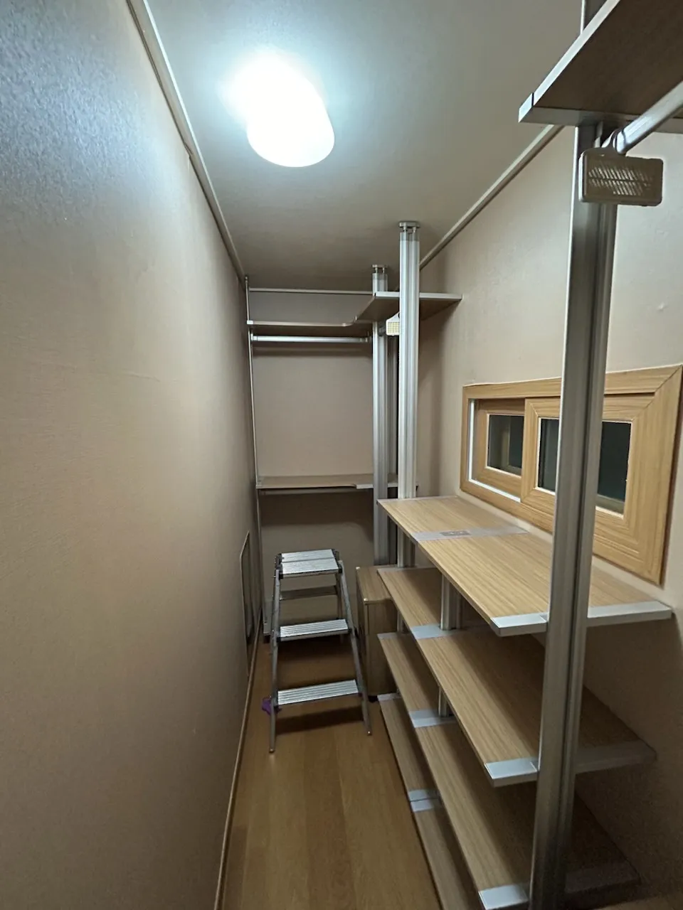

Studio · Officetel
원룸·오피스텔
시스템행거 설치
작은 방일수록 행거 배치가 생활 동선을 좌우합니다.
원룸과 오피스텔은 옷 수납 공간이 따로 없는 경우가 많아 시스템행거가 사실상 옷장 역할을 합니다. 대신 방이 좁아 침대, 책상, 냉장고와 동선이 겹치지 않게 배치하는 것이 중요합니다.
코니처는 작은 공간에 맞게 칸 수를 조정하고, 벽 한 면이나 코너만 활용하는 구성으로 다시 설치합니다. 벽 고정이 어려운 집이라면 고정 방식도 미리 확인합니다.

Situations
작은 공간에서 자주 있는 경우
원룸에서 원룸으로
비슷한 크기라도 창문과 주방 위치에 맞춰 배치를 바꿉니다.
투룸에서 원룸으로
드레스룸 구성을 한 벽 일자형으로 줄입니다.
벽 타공이 어려울 때
천장과 바닥을 지지하는 방식이 맞는지 확인합니다.
복층 오피스텔
설치할 층의 천장 높이에 맞춰 폴 길이를 확인합니다.
Checklist
좁은 공간 배치 체크
| 항목 | 확인 내용 | 필요한 이유 |
|---|---|---|
| 벽 한 면 길이 | 침대·책상을 뺀 길이 | 칸 수를 정합니다 |
| 방문 여는 공간 | 문이 열리는 반경 | 행거 깊이를 정합니다 |
| 벽 고정 가능 여부 | 임대 조건 | 고정 방식을 정합니다 |
| 창문·보일러 | 위치 | 가리지 않게 배치합니다 |
| 천장 높이 | 복층 여부 | 폴 길이를 확인합니다 |
Process
작은 공간 설치 순서
방 사진·치수
방 전체 사진과 설치할 벽 길이를 받습니다.
배치 정하기
생활 동선을 막지 않는 구성을 정합니다.
해체
기존 집에서 칸별로 해체합니다.
설치
정한 구성으로 세웁니다.
점검
문 여닫힘과 동선을 확인합니다.
FAQ
자주 묻는 질문
벽에 구멍 내면 안 되는 집이에요
천장과 바닥을 지지하는 방식은 벽 타공 없이 설치할 수 있는 경우가 많습니다. 제품 구조를 사진으로 확인해 드립니다.
행거가 방에 비해 너무 커요
칸 수를 줄여 설치하고 남는 부품은 정리해 드립니다.
건물 관리실 허락이 필요한가요?
건물마다 다르니 이사 전에 관리실에 작업 가능 시간을 확인해 주세요.
복층 위층에도 설치할 수 있나요?
계단으로 부품을 올릴 수 있으면 가능합니다. 위층 천장 높이를 알려주세요.
작은 행거 하나만 있어요
작은 행거도 이전설치할 수 있습니다. 사진을 보내주세요.